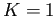

Siguiente: Remoción de correspondencias no Subir: Correspondencia entre puntos claves Anterior: Correspondencia entre puntos claves Índice General
Los elementos guardados en el árbol KD-tree, son vectores de altas dimensiones. En la raÃz del árbol (primer nivel), los datos son divididos en dos mitades por un hiper plano ortogonal para una dimensión elegida y con un valor de umbral. Generalmente, esta división se realiza con la media, en la dimensión con la mayor varianza del conjunto de datos. En caracterÃsticas visuales provistas por SIFT o SURF, utilizar la media en la dimensión con mayor varianza es la que presenta el mejor rendimiento (49). Para construir el árbol, se compara el vector de entrada con el ``valor de partición'' para determinar a qué mitad del árbol pertenece dicho vector. Cada una de las dos mitades de los datos es dividida de igual manera y en forma recursiva, para lograr crear un árbol binario completamente balanceado.
A diferencia del algoritmo KD-tree clásico, los árboles aleatorios son construidos seleccionando la dimensión de división de forma aleatoria sobre las primeras  dimensiones en las que los datos poseen mayor varianza. Se usa el valor fijo que resulta el más adecuado para diferentes datos (49).
Cuando se realiza la búsqueda en el árbol, una cola con prioridad es mantenida a través de todos los árboles aleatorios, por lo que la búsqueda queda ordenada mediante el incremento de la distancia a cada nodo del borde. El grado de aproximación, se determina mediante el examen de un número fijo de nodos hoja. Cuando es alcanzado este número, se termina la búsqueda y se obtienen los candidatos. Se debe tener en cuenta que la cantidad de memoria utilizada aumenta linealmente con el número de árboles aleatorios, una caracterÃstica negativa cuya importancia no resulta menor en la sobrecarga del sistema.